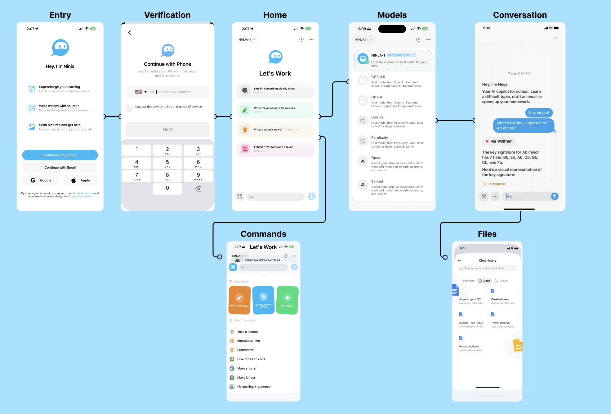
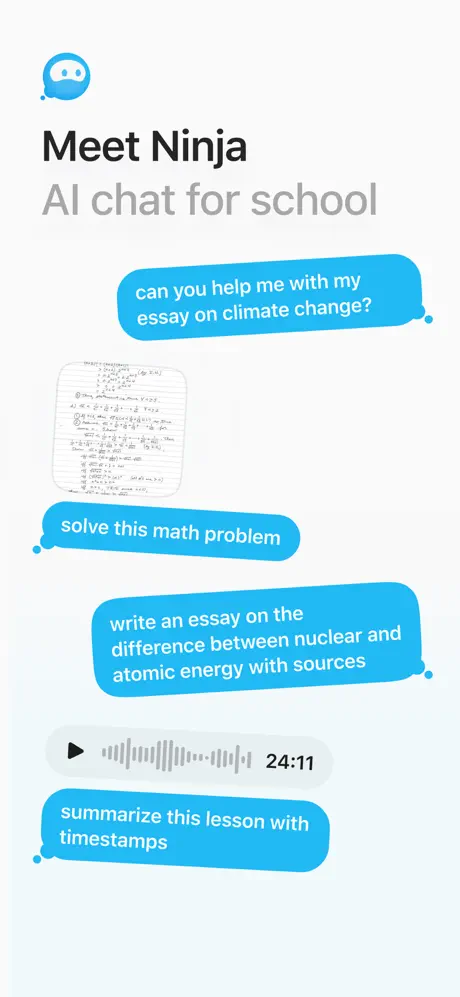
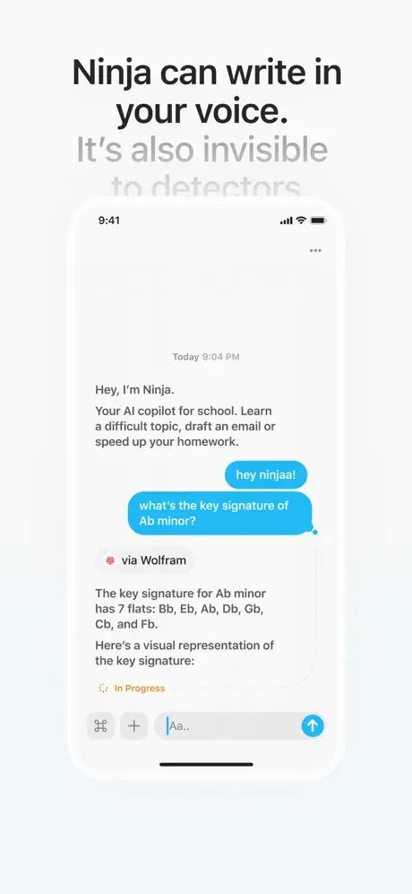
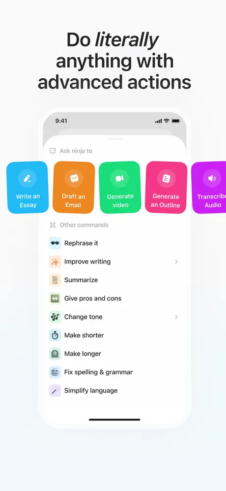
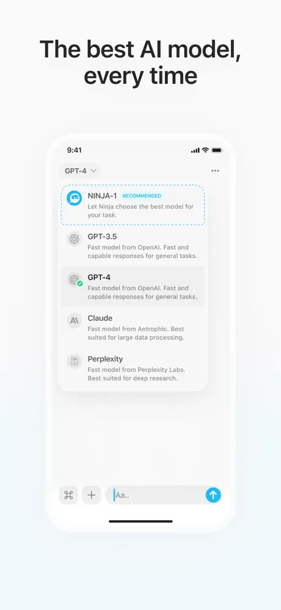

WorkNinja
AI chat for school · iOS design engineering
As a design engineering intern, I took WorkNinja’s AI chat experience from wireframes to high-fidelity flows, then implemented the interfaces in SwiftUI alongside five engineers, a product manager, and a designer.
I built reusable components for the app launch and wrote user-testing scripts to evaluate chat navigation. The launch reached 240K+ downloads and 11K+ App Store ratings, with a 4.9/5 average.
From task to interface
The design started with what a student needed to do, then connected those tasks to the screens I designed and built.
Task paths
Three routes into the same conversation.
- Open Ninja
- Write or attach a question
- Read a response
- Continue in chat
- Open commands
- Choose a task
- Add context
- Review in chat
- Open model selector
- Compare options
- Choose a model
- Return to chat
Screen flow
Entry, chat, commands, models, and files all lead back to the conversation.

Final interface
The finished screens keep the conversation central, with actions and model choice within reach.



